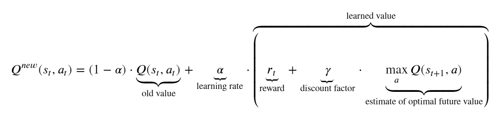

Predicting Speed of News Dissemination using Machine Learning Algorithm
Tags: news, machine-learning, big-data, cloud-computing
Data wrangling is a very tedious process, especially for those with minimal experience on programming. Most of the time, they would have an idea of what the form of their desired output is but at a loss on how to get there from the input data. For example, given an arbitrary Python object like a pandas Dataframe (read from a CSV), they would have to perform a string of operations to reach a desired outcome. If this desired outcome can be manually written, machine learning models can be used to map the input to the output. However, the process and steps to get there will remain a blackbox using traditional machine learning or even deep learning techniques. Our approach to this problem is the use of reinforcement learning wherein the agent is the Python object and the actions it takes are Python methods, changing its state until it becomes similar to the target output.

As an initial study, we start this project with wrangling Python integers to a desired Python integer. From this, we examine the feasibility of the project using Tabular Q-Learning and of further scaling it into other Python objects.
One direct application of this project is finding the solution to Calculator: The Game, a game wherein there is a given input number, a target output number, and a set of actions that can be done on the number.
In reinforcement learning, before anything else, the agent, actions, environment, observations, and corresponding rewards must be defined first.
The agent in this problem is the Python integer that is being processed. It can take different states limited to integers ranging from -500 to 500 (the limit was set to minimize the number of states our agent can take)
Hypothetically, the actions that the agent can take are all Python methods but for this project, there are four main actions: addition, subtraction, multiplication, or (integer) division with a number. For each main action, the number to add, subtract, multiply, or divide our agent with can vary. In this project, this number can take values from 1 to 9 for the addition/subtraction and prime numbers from 2 to 5 for the multiplication/division. The probabilities of taking each main actions is equal but the number to use has probabilities weighted by their inverse for the addition/subtraction and frequency for multiplication/division.
The observations of the agent here is constrained to where the agent's state currently is. For some of the rules implemented below, the agent can also observe if the certain action it took makes it nearer or farther to the target.
The rewards for this learner is based on the following: reaching the goal number, reaching the boundary, getting closer to or farther from the target, or by each iteration. Different points are assigned to each scenario and these are varied as different rules.
The algorithm used for this project is Tabular Q-Learning wherein a table of all possible states (rows) and all possible actions (columns) is created. The values are filled with the discounted future rewards, i.e. how "profitable" is it to take a certain action (column) given your current state (row). The update rules for for this Q-value is:
In reinforcement learning, the action taken at each step can be one of two things: exploration or exploitation. Exploration is the completely random choice of which action to take while exploitation is taking the best next action based on the Q-Learning table. The chance of choosing exploration over exploitation ($\epsilon$) starts at 100% (pure exploration) and decays by 0.001% every 50 iterations. This is done until the 1M iteration at which point the final Q-Learning table is saved. Whenever it reaches the target output, the value reverts back to the initial value and resumes the iterations.
If all states are explored, there will be 999 total possible states or rows (from -499 to 499) and 24 total possible actions or columns (9(add)+ 9(subtract) + 3(multiply) + 3(divide)) for the table.
Across different rule sets, most of the trials failed to converge properly. This is due to the fact that there are too many states that our agent can take and too many actions it can take. The reinforcement learner should be given more time to explore (i.e. more iterations and slower decay in probability of exploration) if this is the case. On the first attempt, the project was constrained to floats rather than integers, but this led to infinite possible states. So it becomes impossible for the learner to properly fill the Q-Learning table.
The convergence of the learner is heavily dependent on the first few convergences. If the table is filled with the solution of minimal steps, the latter part of the iterations wherein the agent is mostly purely exploiting always converges with said minimal steps. Alternatively, some trials tend to be stuck to a periodic solution (e.g. it performs the same two operations every time), so an agent purely exploiting won't ever converge as it will only change between two values.
The rules severely affect the behavior of the resulting solution. For instance, punishing the agent for getting farther from the target number causes the agent to take smaller steps as it is safer. However, this leads to higher number of steps.
Q-Learning cannot be used for Python object manipulation if the number of states it can take is infinite. Alternative reinforcement learning techniques or rules for rewards should be explored for this problem. As for scaling the project into different Python objects, it is feasible but the number of actions the agents can do must be clearly defined and the number of states is finite.
I would like to acknowledge Prof Chris and Prof Erika for sharing their knowledge to us which contributed immensely to the completion of this project. More importantly, Dr. Bunao for sharing his knowledge on reinforcement learning techniques, from which the codes here are based on. Lastly, my classmates for the exchange of ideas which helped alot for this project.
If you have any questions regarding the analysis or wish to have a copy of the report, please contact me via e-mail or LinkedIn